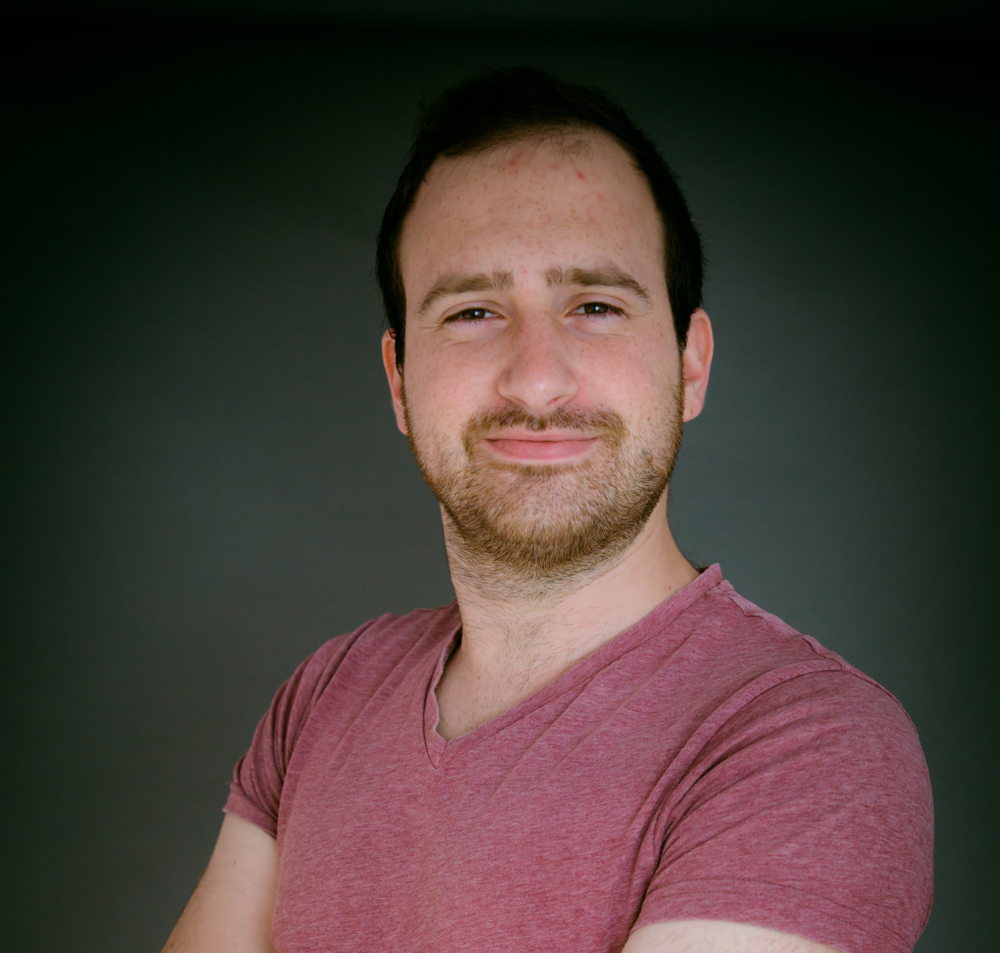

Nadav Oren

Summery
My name is Nadav Oren, I am a Software Engineer Graduate
Skilled in Java, C / C++ , C# , Python and JavaScript
Education
-
BSc Software Engineer, Afeka College of Engineering
2020-2024
-
Specialized in data structures, databases, algorithm design & data analysis
-
Majoring in Artificial Intelligence
Work Experience
-
Technical Support - Contgaurd
March 2019 - March 2021
- Monitored customer's containers delivery and updated the relevent authoraties for abnormalities
- Contributed in R&D by data analysis for bugs using SQL
- Fixed company's hardware and updated software version
Skills
- Proficient in C / C++, C#, Python, Java and JavaScript.
- Knowledge of HTML, CSS, React, SQL, MySQL, MongoDB and Firebase.
- Proficient in data structures, algorithms, and machine learning.
Volunteer Activities
2021-2023
- Contributed in helping building for poor neighborhoods, such as outdoor benches, renovate basement as a small library, and repainting walls
- Built smart small arcilogical farm and an oven for Hood Hill boarding house named Rosie urban youth
Other
Hobbies
Contact Me